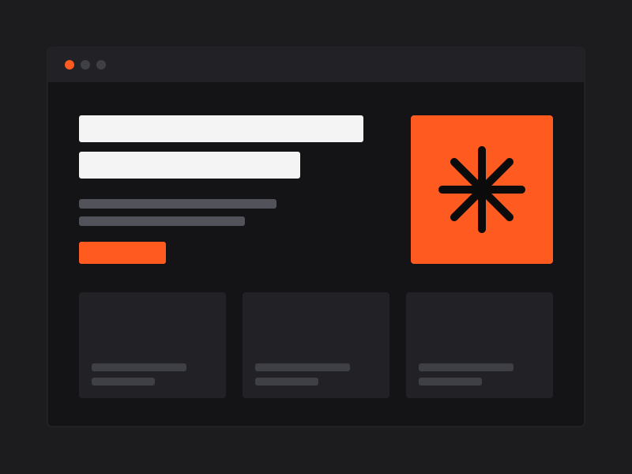
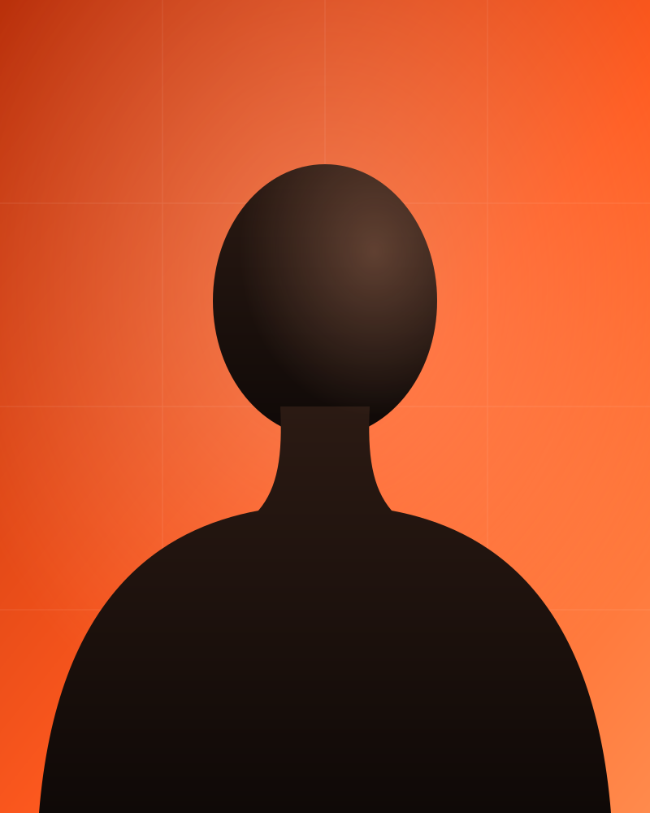
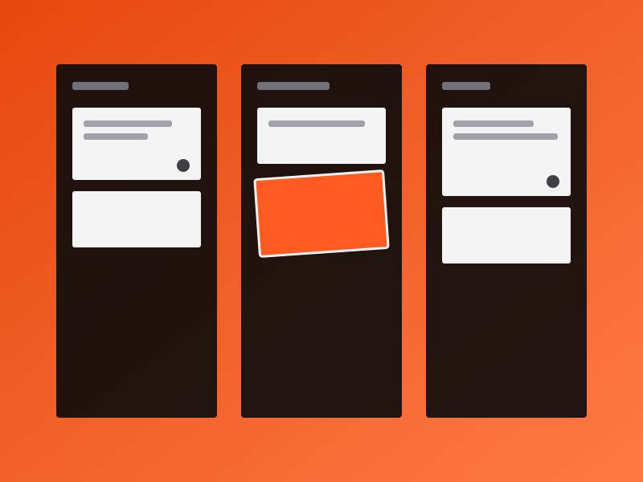
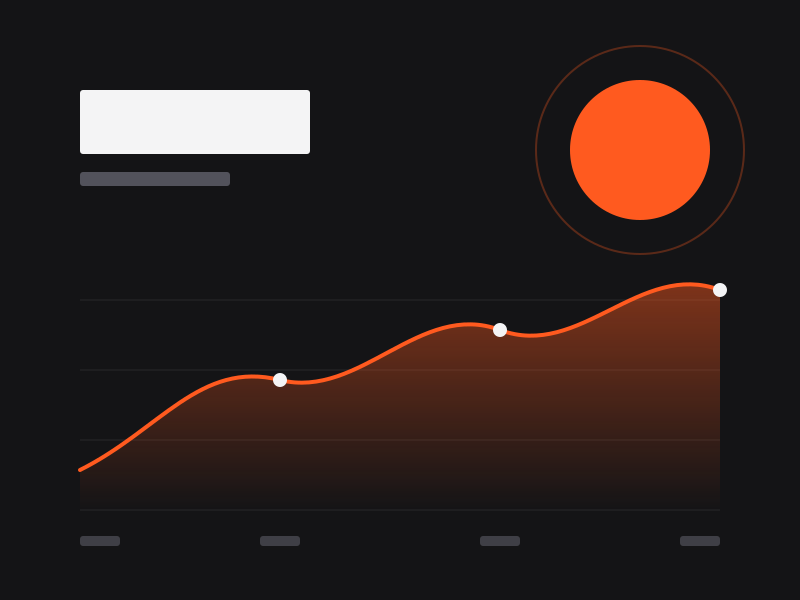
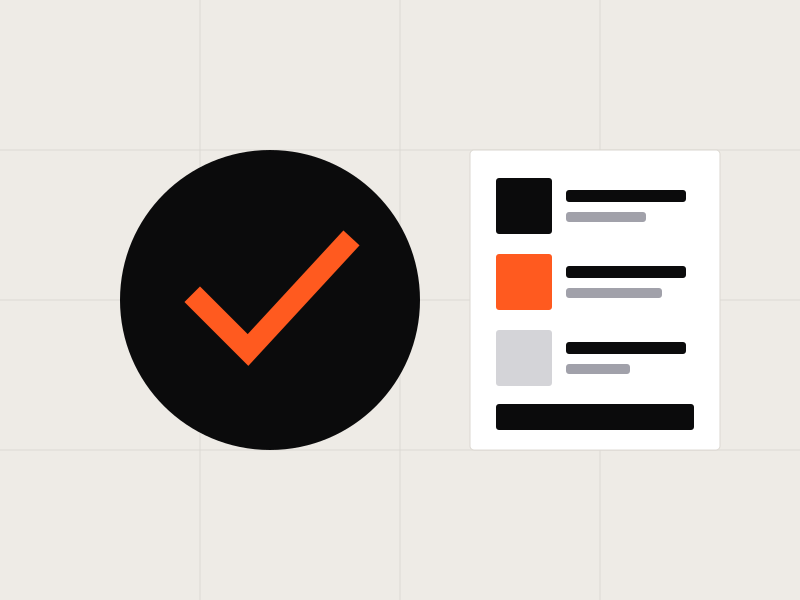

개발자를 위한 블로그 플랫폼
MDX 기반 글쓰기와 코드 하이라이팅, 시리즈 묶음을 지원하는 블로그입니다. 정적 생성으로 Lighthouse 성능 100점을 달성했습니다.
- Next.js
- MDX
- Vercel
I build fast, accessible and thoughtful web experiences that people enjoy using.
사용자 경험을 코드로 설계하는 5년 차 프론트엔드 개발자입니다.


©2026
(01) — About
5년 차 프론트엔드 개발자로, 복잡한 요구사항을 단순하고 직관적인 인터페이스로 바꾸는 일을 합니다. 성능과 접근성을 기본값으로 두고, 디자이너·백엔드 개발자와 같은 언어로 대화하는 개발자를 지향합니다.
웹 퍼블리셔로 시작해 디자인 시스템과 대규모 프론트엔드 아키텍처까지 경험을 넓혀 왔습니다. 화면 하나를 만들 때도 사용자가 마주할 맥락과 속도를 먼저 생각합니다.
측정 가능한 개선을 좋아합니다. 로딩 시간, 전환율, 접근성 점수처럼 숫자로 확인할 수 있는 변화를 만들고, 그 과정을 문서로 남겨 팀과 공유합니다.
(02) — Skills
사용자와 맞닿는 화면을 설계하고 구현합니다.
프론트엔드에 필요한 API와 데이터를 다룹니다.
협업, 테스트, 배포까지 흐름을 자동화합니다.
주력 기술
(03) — Experience
2023.03 — 현재
재직 중시니어 프론트엔드 개발자
2021.01 — 2023.02
프론트엔드 개발자
2019.07 — 2020.12
웹 퍼블리셔
(04) — Projects
MDX 기반 글쓰기와 코드 하이라이팅, 시리즈 묶음을 지원하는 블로그입니다. 정적 생성으로 Lighthouse 성능 100점을 달성했습니다.

WebSocket으로 여러 사용자의 변경 사항을 실시간 동기화하는 작업 관리 도구입니다. 드래그 앤 드롭과 낙관적 업데이트를 구현했습니다.

현재 위치의 날씨와 시간대별 예보를 차트로 보여주는 대시보드입니다. 프레임워크 없이 Vanilla JS로 상태 관리와 렌더링을 구현했습니다.

현재 페이지의 색 대비, 대체 텍스트, 제목 구조를 검사해 개선 방법을 알려주는 오픈소스 확장 프로그램입니다.
(05) — Education
2015.03 — 2019.02
학력컴퓨터공학과 학사
2022.05
자격증Amazon Web Services
2019.08
자격증한국산업인력공단
(06) — Contact
새로운 기회에 열려 있습니다
새로운 프로젝트, 협업 제안, 가벼운 커피챗 모두 환영합니다. 메일을 보내 주시면 영업일 기준 하루 안에 답장드리겠습니다.
hello@gildong.dev